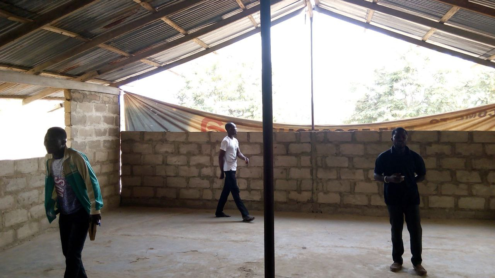
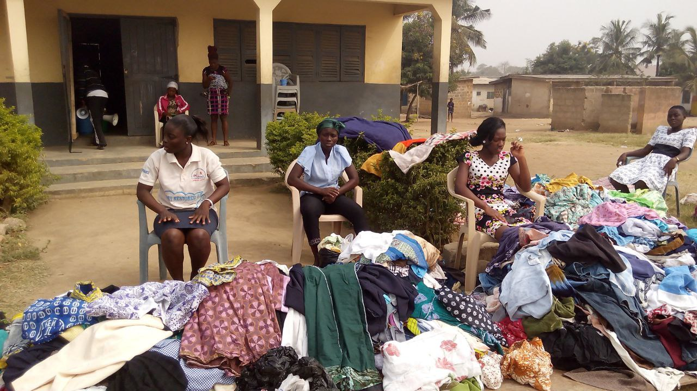
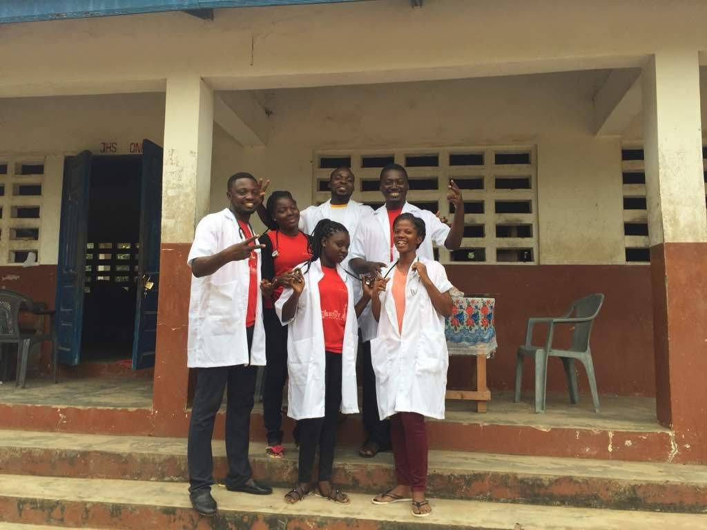

A Decade of Mission Impact
Communities Reached • Souls Won • Lives Transformed
Over the past decade, the Zoe-Tirzah Missions movement has carried the Gospel into towns, villages, and underserved communities across Ghana. Through crusades, house-to-house evangelism, prayer outreach, counseling sessions, and community engagement, thousands of lives have encountered hope, healing, and spiritual transformation.

Revival Ignites Transformation in Domeabra
250 Souls Won Through Evangelism & Community Outreach
The Domeabra mission became one of the ministry’s most remarkable early breakthroughs. Through crusades, prayer sessions, and personal evangelism, over 250 individuals surrendered their lives to Christ. A defining moment came when the community’s chief priestess and her assistant publicly renounced idol worship and joined the church community.
Read Full Mission Story →
Hope and Healing Reach the Tomefa Community
115 Souls Reached Through Counseling & Crusades
The Tomefa outreach combined open-air crusades, personal counseling, discipleship encounters, and prayer ministry to impact families across the region. The mission team successfully ministered to over 115 individuals, bringing encouragement, restoration, and renewed faith to the community.
Read Full Mission Story →
Danchyira Experiences a Powerful Spiritual Awakening
135 Souls Won Through Innovative Evangelism
The Danchyira mission introduced strategic dawn broadcasting alongside traditional outreach efforts. Early morning Gospel broadcasts drew large crowds and opened doors for meaningful conversations, resulting in over 135 documented salvations and renewed community engagement with the church.
Read Full Mission Story →
Avornyor Crusade Draws Hundreds to Christ
219 Souls Won During Multi-Day Outreach
Through large-scale crusades, youth evangelism, and prayer ministry, the Avornyor mission touched lives across the region. More than 219 people responded to the Gospel message, with over 55 decisions recorded during the main crusade gatherings alone.
Read Full Mission Story →
Hobor Mission Records Extraordinary Harvest
240 Souls Won Across Crusades & Community Visits
The Hobor mission became one of the ministry’s largest evangelistic outreaches at the time. Through crusades, family visits, and discipleship programs, 240 individuals committed their lives to Christ, nearly half through the main evening crusade events.
Read Full Mission Story →
Asensohu Shed Outreach Restores Faith and Unity
150 Lives Reached Through Community Ministry
Following challenging pandemic seasons, the Asensohu Shed outreach reignited spiritual passion through worship gatherings, evangelism, counseling, and youth engagement activities. The mission successfully reached 150 souls with messages of healing and hope.
Read Full Mission Story →
Nyakrom Witnesses Historic Gospel Response
519 Souls Won in Record-Breaking Mission
The Nyakrom mission marked the highest number of documented salvations in the organization’s history. Through coordinated evangelism, crusades, youth ministry, and house-to-house outreach, an incredible 519 people responded to the Gospel message.
Read Full Mission Story →
Navrongo Mission Sparks Testimonies of Healing
343 Souls Won Through Prayer & Evangelism
The Navrongo mission became widely remembered for powerful testimonies of healing and restoration. One elderly woman reportedly regained mobility after prayer ministry and later chose to be baptized. Overall, the outreach recorded 343 salvations and widespread community participation.
Read Full Mission Story →
Woe Outreach Concludes the Decade With Massive Impact
503 Souls Won Through Personal Evangelism
The Woe mission emphasized house-to-house evangelism, personal discipleship, and crusade ministry. The outreach concluded with 503 documented salvations, including over 351 individuals reached through direct home visits and community-centered ministry efforts.
Read Full Mission Story →
Kyiasi / Nsadwir Outreach Concludes the Decade With Massive Impact
503 Souls Won Through Personal Evangelism
The mission emphasized house-to-house evangelism, personal discipleship, and crusade ministry. The outreach concluded with 503 documented salvations, including over 351 individuals reached through direct home visits and community-centered ministry efforts.
Read Full Mission Story →